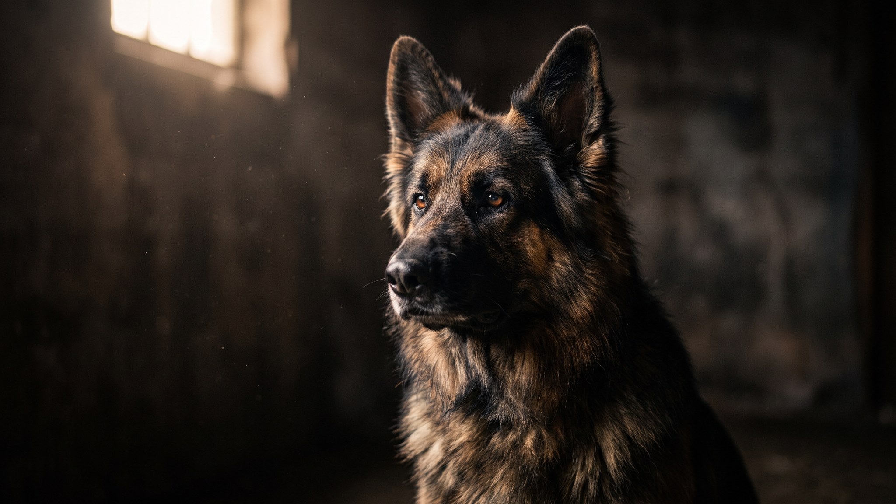

Польская низинная овчарка, или PON, выглядит как добродушная лохматая туча, но под шерстью скрывается пастух с многовековым стажем. Эта собака самостоятельно принимала решения в поле без участия человека, и эту привычку она сохранила. Порода требует опыта, времени и расчёски, зато даёт преданность и работоспособность, которые сложно найти в декоративных породах.
🐾 Ваш питомец — польская низинная овчарка?
Заведите профиль в AnimaLife: приложение запомнит породу, возраст и вес и будет подсказывать по уходу именно для неё. Вопросы AI-ветеринару — круглосуточно и бесплатно.
Завести профиль → Завести в MAX →
У вас iPhone? AnimaLife есть в App Store
Польская низинная овчарка веками работала на польских равнинах: пасла скот и охраняла стадо без постоянных указаний пастуха. Собака, которая ждёт команды, в поле не выживала. Поэтому PON умеет думать за себя, оценивать ситуацию и действовать по собственному суждению.
В городской жизни это означает: собака будет проверять границы, запоминать ваши реакции и использовать их в своих интересах. Дрессировка через мотивацию и последовательность правил работает. Непоследовательность и мягкое попустительство ведут к тому, что PON берёт управление семьёй в свои лапы. Начинать обучение нужно с первого дня.
Порода хорошо запоминает. Одну усвоенную команду PON не забудет через год. Это же качество делает её злопамятной: грубое обращение оставляет след надолго.
Шерсть польской низинной овчарки двойная: мягкий густой подшёрсток и длинная грубоватая ость сверху. В период линьки (дважды в год) она выпадает клоками. Без регулярного ухода подшёрсток сваливается в колтуны, которые болезненно тянут кожу.
PON не требует изнурительных марафонских прогулок, но ему нужна осмысленная работа. Просто побегать на площадке не хватит. Собака должна думать.
Хорошо подходят пастушьи виды спорта (херддинг), аджилити, нюхательный спорт, занятия по послушанию. Два полноценных выгула в день с активной фазой и 15–20 минут умственной нагрузки закрывают потребность. Скучающий PON может начать «пасти» детей или переставлять вещи в квартире по своему усмотрению.
Польская низинная овчарка бдительна от природы. Чужих она оценивает с осторожностью и не торопится с доверием. Хороший сторож из неё получается естественным образом, без специальной дрессировки.
С семьёй PON преданна и мягка, особенно с детьми, которых знает с щенячьего возраста. Незнакомых детей порой встречает настороженно. Ранняя социализация с людьми разного возраста и другими собаками снижает избыточную осторожность и делает собаку более открытой.
Порода для людей, которые готовы к регулярному грумингу и последовательному обучению с первых месяцев. Хорошо подойдёт активным семьям с опытом работы с пастушьими или рабочими породами.
Новичкам и тем, кто не готов тратить время на расчёсывание несколько раз в неделю, порода скорее не подойдёт. Пустить уход на самотёк не получится без последствий для шерсти и поведения.
🐾 У вас польская низинная овчарка?
AnimaLife соберёт уход под породу: к каким болезням есть склонность, что проверять по возрасту, чем кормить и когда пора к врачу. Бесплатно, прямо в мессенджере.
Собрать план ухода → Собрать в MAX →
У вас iPhone? AnimaLife есть в App Store
🐾 Понравился разбор?
Подпишитесь на канал — каждый день разбираем по одному тревожному симптому у кошек и собак: что в пределах нормы, а когда пора к врачу. Подпишитесь, чтобы не пропустить разбор, который может спасти здоровье вашего питомца.